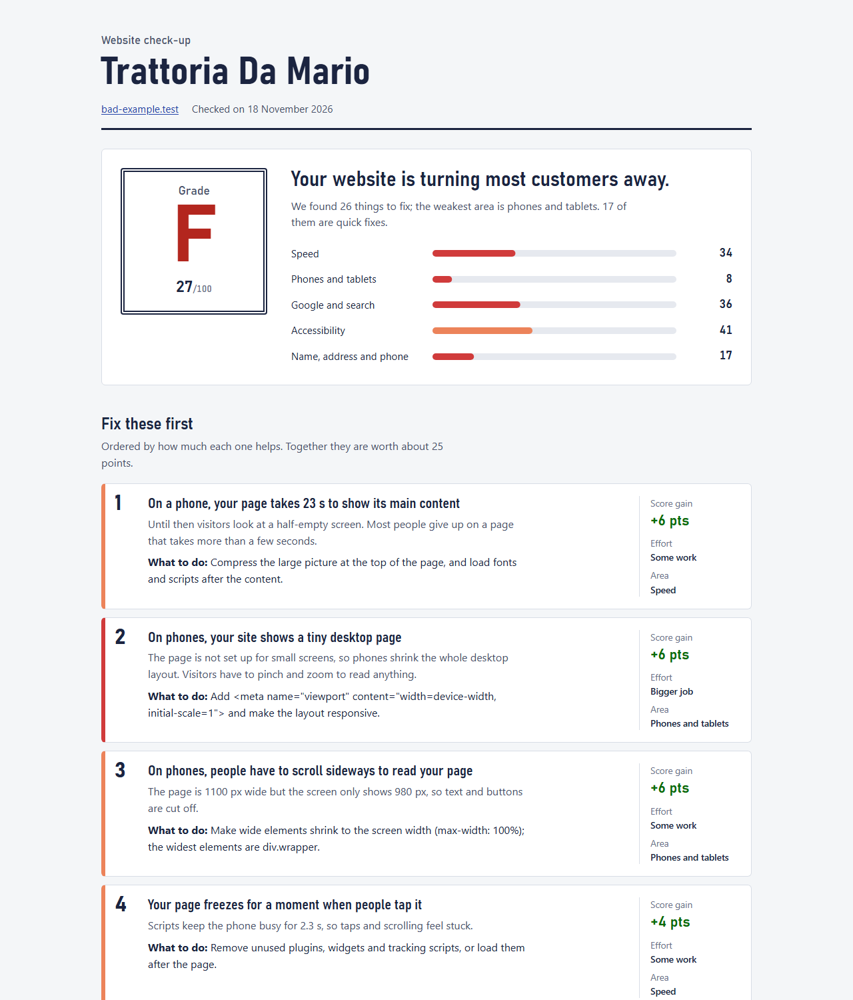
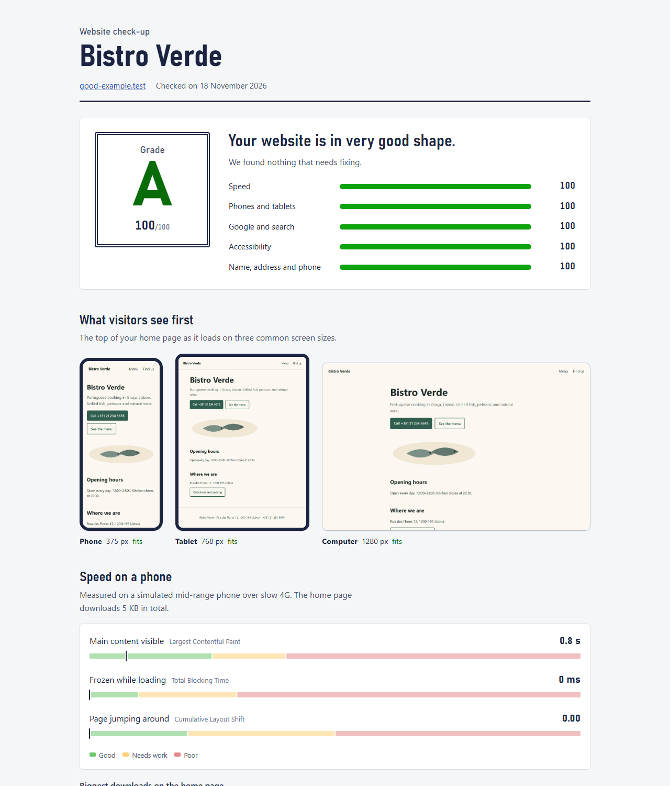

Trattoria Da Mario (neglected site)
No phone layout, a 6 MB PDF menu, broken structured data, a different phone number from its listing.
Point it at a small business website and get a report the owner can read: how fast it is on a phone, whether it fits the screen, whether Google can find the address and opening hours, and what to fix first.
It runs Lighthouse, axe-core and a headless browser at three screen sizes, crawls the site for broken links, compares the name, address and phone with a listing you pass in (for example from OpenStreetMap), and writes one HTML file plus JSON and PDF.
Both sites are fictional test pages that ship with the project. No real business was audited for this page.

No phone layout, a 6 MB PDF menu, broken structured data, a different phone number from its listing.

Fast, responsive, complete Restaurant data for Google, details matching its listing.
npm install -g shopfront-audit
npx playwright install chromium
shopfront-audit https://example.com --name "Bistro Verde" \
--address "Rua das Flores 12, Lisboa" --phone "+351 21 234 5678"Batch mode, the GitHub Action and the scoring formula are described in the README.